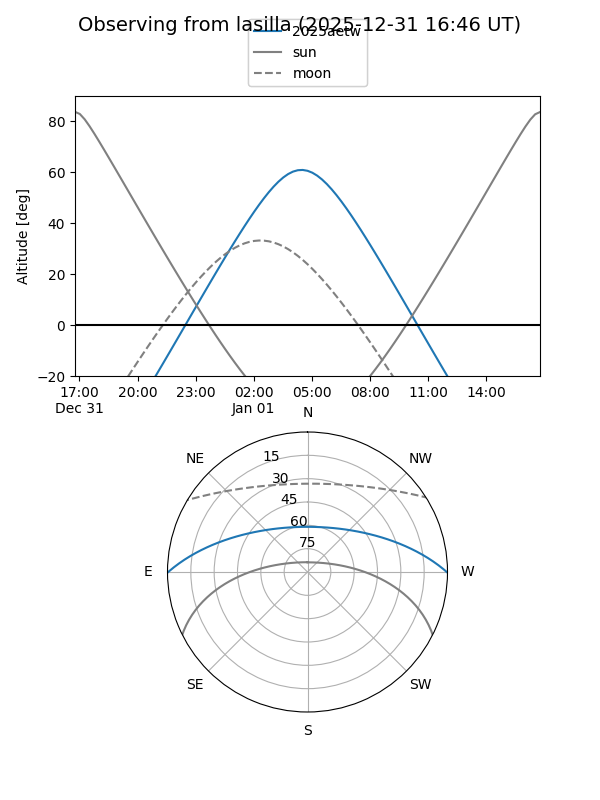
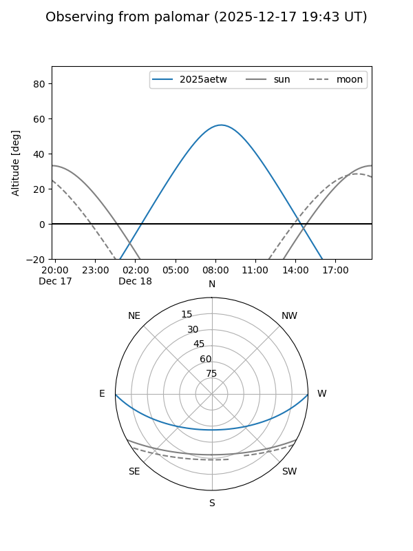
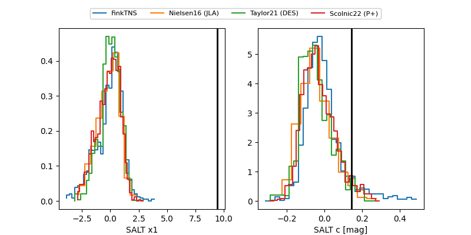

2025aetw
Target 2025aetw at 2025-12-18 11:17
Aliases and brokers:
FINK: fink-portal.org/ZTF25acegdna
Lasair: lasair-ztf.lsst.ac.uk/objects/ZTF25acegdna
ALeRCE: alerce.online/object/ZTF25acegdna
TNS: wis-tns.org/object/2025aetw
YSE: ziggy.ucolick.org/yse/transient_detail/2025aetw
alt names
ZTF25acegdna (ztf,fink_ztf)
2025aetw (tns,yse)
Coordinates:
equatorial (ra, dec) = 96.6280,-0.20664
equatorial (HMS+DMS) = 06:26:30.72,-00:12:23.92
galactic (l, b) = (210.2661,-5.63830)
Photometry
last ztfg=19.38, ztfr=18.77
2 ztfg, 2 ztfr detections
Lightcurve

Visibility


Additional plots
